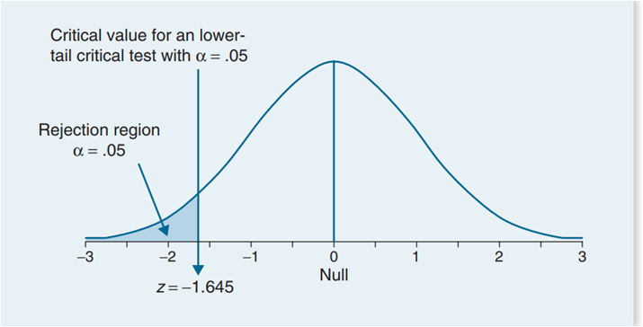
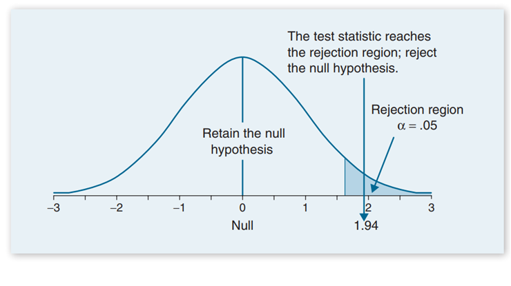

Using the same study from Example 8.1, Templer and Tomeo (2002) reported that the population mean on the quantitative portion of the GRE General Test for students taking the exam between 1994 and 1997 was \(558 \pm 139\) \(\mu\pm \sigma \). Suppose we select a sample of 100 students enrolled in an elite private school (n = 100). We hypothesize that students at this elite school will score higher than the general population. We record a sample mean equal to 585, \(\bar{x} = 585\),
Compute the one independent sample z test at a .05 level of significance.H0 : \(\mu = 558\)
H1 : \(\mu \lt 558\)
z = \(\frac{\bar{x}-\mu}{\frac{\sigma}{\sqrt{n}}} \)
z = \(\frac{585-558}{13.9}=1.94\)
The time, X minutes, that it takes Amelea to complete a 1000-piece puzzle can be modelled using X tilde straight N left parenthesis 204 comma 81 right parenthesis . Amelea gets prescribed a new pair of glasses and claims that the time it takes her to complete a 1000-piece puzzle has decreased. Wearing her new glasses, Amelea completes 12 separate 1000-piece puzzle and calculates her mean time on these puzzles to be 201 minutes. se these 12 puzzles as a sample to test, at the 5% level of significance, whether there is evidence to support Amelea’s claim. You may assume the variance is unchanged.
H1 : \(\mu = 204\)
H1 : \(\mu \lt 204\)
z = \(\frac{\bar{x}-\mu}{\frac{\sigma}{\sqrt{n}}} \)
\(P(x\leq 204) =P(Z<\(\frac{204-201}{\frac{9}{\sqrt{12}}}=0.1241\)
\(0.1241 \gt 0.05 \)
There is insufficient evidence to reject the null hypothesis
Using the same study from Example 8.1, Templer and Tomeo (2002) reported that the population mean on the quantitative portion of the GRE General Test for students taking the exam between 1994 and 1997 was \(558 \pm 139\) \(\mu\pm \sigma\). Suppose we select a sample of 100 students enrolled in an elite private school (n = 100). We hypothesize that students at this elite school will score higher than the general population. We record a sample mean equal to 585 \(\bar{x} = 585\),
Compute the one independent sample z test at a .05 level of significance.H0 : \(\mu = 558\)
H1 : \(\mu \gt 558\)
z = \(\frac{\bar{x}-\mu}{\frac{\sigma}{\sqrt{n}}} \)
z = \(\frac{585-558}{13.9}=1.94\)
H0 : \(\mu = 558\)
H1 : \(\mu \ne 558\)
z = \(\frac{\bar{x}-\mu}{\frac{\sigma}{\sqrt{n}}} \)
z = \(\frac{585-558}{13.9}=1.94\)

A machine produces circular discs with a radius R, where R is normally distributed with a mean of 2cm and a standard deviation of 0.3cm. The machine is serviced and after the service , a random sample of 40 discs is taken to see if the mean has changed from 2cm. The radius is still normally distributed with a standard deviation of 0.3 cm. The mean is found to be 1.9cm. Has the mean changed? Test this to a 5% significance level.
H0 : \(\mu = 2\)
H1 : \(\mu \ne 2\)
z = \(\frac{\bar{x}-\mu}{\frac{\sigma}{\sqrt{n}}} \)
\(P(x\leq 1.9) =P(z\leq\frac{1.9-2}{\frac{0.3}{\sqrt{40}}})=0.01751\)
\(0.01751 \lt 0.025 \)
There is sufficient evidence to reject the null hypothesis
Wheels are made to measure for a bike. The diameter of the wheel is normally distributed with a mean of 100cm and a standard deviation of 5cm. The sample size is 30 Some people think that their wheels are too small. Find the critical value of this to a 5% significance level.
H0 : \(\mu = 100\)
H1 : \(\mu \lt 100\)
\(P(x\leq a) =P(z\leq\frac{a-100}{\frac{5}{\sqrt{30}}})=0.05\)
\(P(x\leq 98.5)=0.05\)
Wheels are made to measure for a bike. The diameter of the wheel is normally distributed with a mean of 100cm and a standard deviation of 5cm. The sample size is 30 Some people think that their wheels are too big. Find the critical value of this to a 5% significance level.
H0 : \(\mu = 100\)
H1 : \(\mu \gt 100\)
\(P(x\geq a) =P(z\geq \frac{a-100}{\frac{5}{\sqrt{30}}})=0.05\)
\(P(x\geq 101.5)=0.05\)